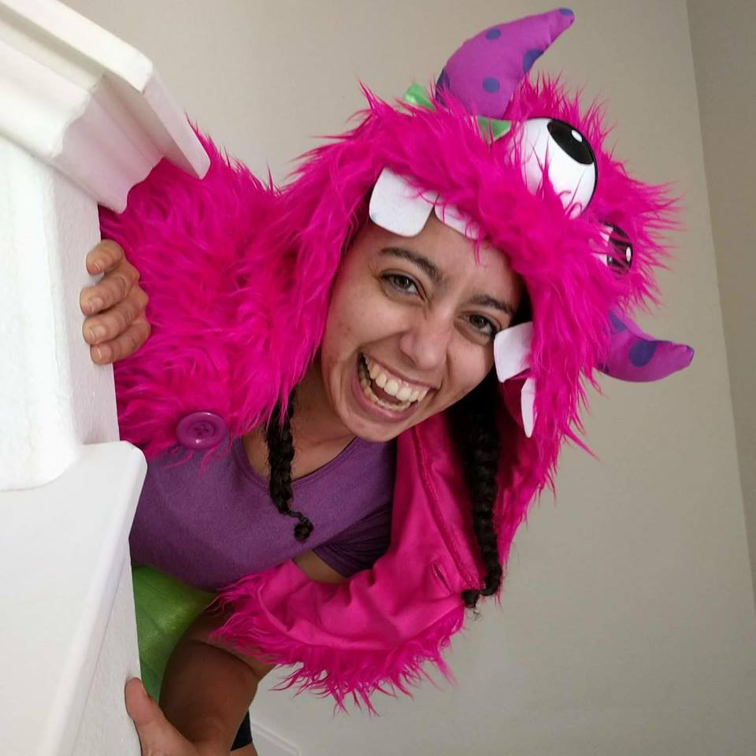

About Me

I am a former Army Junior Officer from Washington State. Currently I working in Customer Success for HR Saas products. Although I currently work in with clients of all sizes, I have a special place in my heart for small businesses. I have experience with getting to the root of customer and company requirements. My career ambition is to combine my love of leadership with technical and soft skills.
Outside of work I enjoy skating for the Texas Speed Club and taking classes. I reside in South Austin with my two cats, Piper and Cooper. My personal goals include getting a dog, learning to swim better, and buying a rental property.
Connect With Me